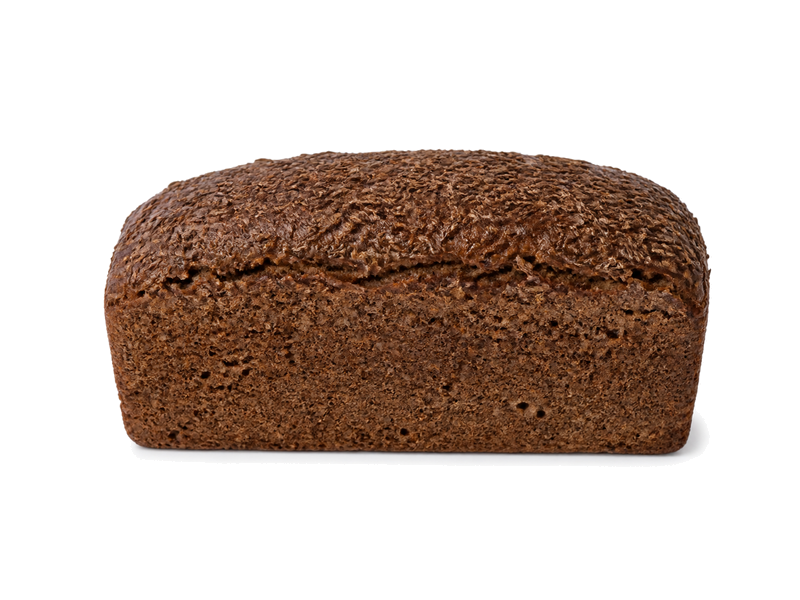

Zboża i kasze
Chleb żytni 100%
Chleb żytni 100%: 6 g białka, 204 kcal, 40 g węglowodanów i 1 g tłuszczu na 100 g. Kategoria: Zboża i kasze.
Kalorie204 kcalna 100 g
Białko / proteiny6 g
Węglowodany40 g
Tłuszcz1 g
Cena (szac.)~0,90 złza 100 g
Ceny zaktualizowano: sierpień 2026 (szacunek — ceny w popularnych supermarketach)
Porcja: porcja (80g)
| Kalorie | 163 kcal |
|---|---|
| Białko | 4.8 g |
| Węglowodany | 32 g |
| Tłuszcz | 0.8 g |
| Cena (szac.) | ~0,75 zł |
Szczegółowe składniki odżywcze na 100 g
| Wartość energetyczna (kalorie) | 204 kcal |
|---|---|
| Białko (proteiny) | 6 g |
| Węglowodany | 40 g |
| Tłuszcz | 1 g |
| Tłuszcze nasycone | 0.4 g |
| Tłuszcze nienasycone | 0.6 g |
| Witaminy i minerały (skrót) | Mangan, Selen, Witamina B1 |
| Współczynnik kcal / 1 g białka | 34.0 |
| Cena produktu (szac. za 100 g) | ~0,90 zł |
| Cena za 100 g białka (szac.) | ~15,62 zł |
Witaminy i minerały na 100 g
Ilość w 100 g produktu oraz orientacyjny % dziennego zapotrzebowania (RDA) dla dorosłej osoby. Żelazo wg normy dla kobiet; sód jako % limitu. Wartości typowe (USDA / tabele żywieniowe / etykiety) — mogą się różnić między markami.
-
Witamina E 0.5 mg
-
Witamina B1 (tiamina) 0.25 mg
-
Witamina B3 (niacyna) 2 mg
-
Witamina B6 0.15 mg
-
Witamina B9 (foliany) 25 µg
-
Żelazo 2.2 mg
-
Magnez 40 mg
-
Fosfor 110 mg
-
Potas 150 mg
-
Cynk 1.2 mg
-
Selen 20 µg
-
Miedź 150 µg
-
Mangan 1.2 mg
-
Sód 480 mg